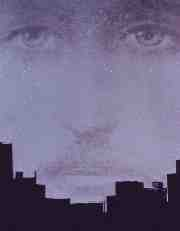
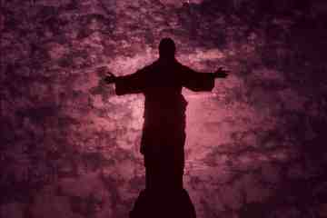
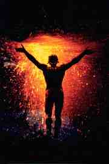

|  |
Pensei em iniciar essa mensagem com o poema de Fernando Pessoa que mais
me ajudou no caminho da Arte até hoje.
Mas a partir daí tudo o que eu escrevesse ia soar raso e copiado.
(hehehe..)
Por isso, vou deixa-lo para o final.
Quero expressar minha profunda convicção da possibilidade de reverência à figura do Cristo Redentor de acordo com as crenças Wiccans.
Mais ainda, correndo o risco de soar extremamente antipático, gostaria
de dizer que considero ingênua a opinião de que misturar panteões
de civilizações tão diversas quanto a mesopotâmica,
a egípcia e a hindu, e ao mesmo tempo excluir imagens do rico imaginário
cristão seja coerente. Não pode ser coerente. Ao relacionarmos
deidades dos caiapós e dos celtas, inevitavelmente desprezamos certos
detalhes importantes de cada grupo específico em prol de um
objetivo que vise realçar as semelhanças. Por que a imagem
do Cristo não pode ser aproveitada em nossos ritos, então,
a despeito do uso odioso a que tem sido submetida por outros?
|  |
Antes de mais nada, a figura do mártir redentor é parte do inconsciente coletivo tanto quanto a da grande mãe nutridora, não importa de que outras figuras pagãs tenha evoluído, e é belamente representada pelo messias crucificado. Em segundo lugar, não podemos nos dar ao luxo de sermos mais ingênuos ainda (a partir daí beirando a ignorância da fuga infantil da realidade) acreditando que as antigas religiões jamais foram meio de controle e domínio sobre outros povos e não vendo que em nome das mesmas deidades que hoje consideramos "alternativas" atrocidades semelhantes às fogueiras que já queimaram nossos antepassados foram cometidas - basta nos lembrarmos do povo egípcio. A história de Ísis e Osíris é muito lindinha, mas é parte de um conjunto de crenças que certa vez foi utilizado por um estado escravagista cruel e insano.
Está mais do que claro pra mim, portanto, que não devemos
nos permitir desvalorizar imagens arquetípicas poderosas por estarem
elas associadas a momentos de vergonha da história humana. Os sacerdotes
que fizeram tal uso dessas poderosas ferramentas e seus argumentos já
não nos dizem respeito! Misturemos, sim, os panteões, e sem
exceções, portanto!
Mas vejam, não falo aqui de adotar princípios cristãos (ou de qualquer outra natureza, sem critério) como parte integrante da Bruxaria, de forma alguma! É também bastante óbvio que boa parte da estrutura religiosa cristã é quase oposta aos ideais neopagãos. Falo, sim, da capacidade que devemos ter de filtrar todo o lixo que rodeia símbolos poderosos contidos na fé cristã, que estão moldados de maneira belíssima, como a Virgem Maria, Jesus e outros tantos, símbolos muito próximos de nossa realidade e que podem ser igualmente destacados do pano de fundo sujo, assim como destacamos Toth ou Zeus.
Não vejo porque a leitura do Mabinogion seja de maior validade que a da Bíblia, por exemplo.
Por isso, reverencio o Cristo Redentor, o Messias Crucificado como uma
das tantas faces do grande deus pai. É aquele cuja voz foi silenciada,
porque trazia a luz onde a escuridão era forçada; aquele
que aceitou carregar sua cruz por pecados que não existiam; aquele
que aceitou sentir toda a dor da humanidade em sua carne e fez de seu sangue
sagrado; aquele que se chamou filho de deus, e deus ao mesmo tempo, e não
foi compreendido; talvez um dos maiores bruxos já conhecidos.
|  |
Incorporar e promover uma releitura crítica, consciente e sincera
de elementos da crença de nossos próprios algozes, juízes
e acusadores, é sem dúvida uma postura necessária
e de muito bom senso. Do contrário, é permitir que vençam,
de uma forma ou de outra, aceitando a linha divisória definida por
eles entre nossas crenças, caindo em contradição contra
um dos princípios mais antigos comumente aceitos no meio pagão,
de que todos os deuses são um só.
O lugar da intuição pura é nas sombras, oras!
Que gritemos, então, aos quatro ventos que SOMOS BRUXOS, mas na hora em que formos cobrados, que tenhamos tido antes a iniciativa de levar nossas idéias às ÚLTIMAS CONSEQÜÊNCIAS, de modificação de valores e pensamentos profundamente incrustados em nossa alma há tanto tempo! Ou vamos andar mancos apoiados em frases um dia poderosas, hoje transformadas em medíocres clichês?
|
|
Faço, então, um apelo: não se neguem a responder! Esta talvez seja a maior das batalhas, talvez a única válida, dentre todas: a que lutamos contra nós mesmos! Corram o risco! Questionem-se! Ponham suas convicções mais íntimas em dúvida! EXPONHAM-SE A SI MESMOS, é um exercício dificílimo, que, creio, vale a pena. |
Não a ti, Cristo, odeio ou te não quero.
Em ti, como nos outros, creio deuses mais velhos.
Só te tenho por não mais nem menos
Do que eles, mas mais novo apenas.
Odeio-os sim, e a esses com calma aborreço,
Que te querem acima dos outros teus iguais deuses.
Quero-te onde tu estás, nem mais alto
Nem mais baixo que eles, tu apenas.
Deus triste, preciso talvez porque nenhum havia
Como tu, um a mais no Panteão e no culto,
Nada mais, nem mais alto nem mais puro
Porque para tudo havia deuses, menos tu.
Cura tu, idólatra exclusivo de Cristo, que a vida
É múltipla e todos os dias são diferentes dos outros,
E só sendo múltiplos como eles
Estaremos com a verdade e sós.
|

 Volta
para Índice
da TriboVolta
para Índice Themas Mágickos
Volta
para Índice
da TriboVolta
para Índice Themas Mágickos